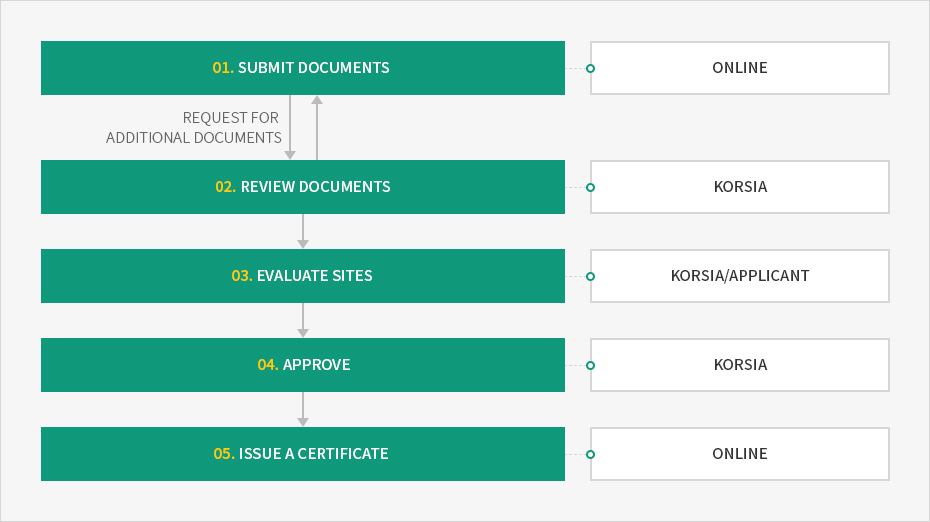
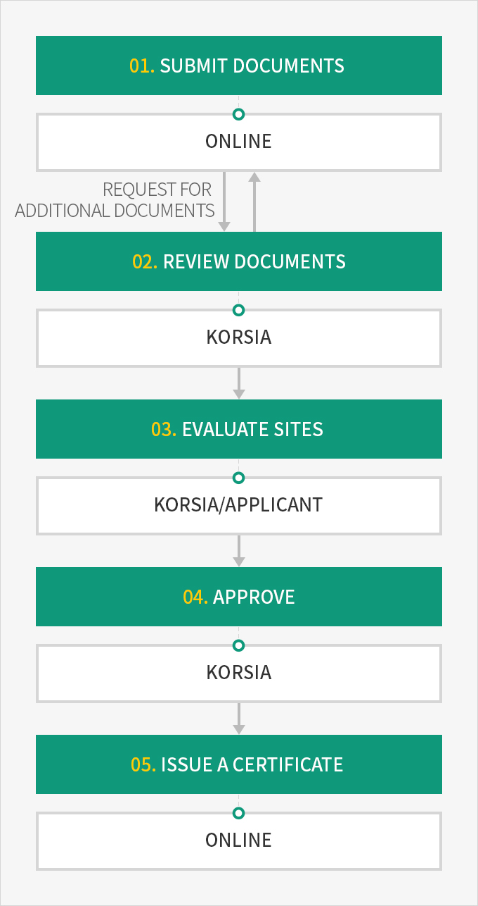

Research and Development Service Businesses
- Home
- Incentives
- R&D Center
- Research and Development Service Businesses
Research and development service businesses assist in outsourcing of R&D. They are classified into research and development businesses, that conduct profit-making R&D independently or by entrustment, and research and development support businesses, that support R&D activities.
Research and development service providers that report and register to the Korea R&D Service Industry Association (substitutional agency of the Ministry of Science and ICT) are eligible to participate in national R&D projects and receive support from the government.
※ Current status: 821 research and development businesses, 710 research and development support businesses (as of August 2019)
※ Related law: Articles 2 and 25 of the Special Act on Support of Science and Engineers for Strengthening National Science and Technology Competitiveness
※ Related law: Articles 2 and 25 of the Special Act on Support of Science and Engineers for Strengthening National Science and Technology Competitiveness
| Category | Content | Eligible Businesses |
|---|---|---|
| Research and development business | Businesses that conduct some or all R&D activities for companies that are unable to meet their own R&D demands (entrustment), or businesses that independently develop and supply technologies required by the market |
|
| Research and development support business | Businesses that support R&D activities, such as R&D consulting, R&D planning and evaluation, leasing and transactions of research equipment, technology management and strategy, analysis on science and technology information and the securing and suggesting of personnel to do such tasks |
|
※ Source: Korea R&D Service Industry Association (R&D Service Business Registration and Support System)
Notification
Research and development service businesses that meet certain qualifications are eligible to receive a certificate after completing an online application to the Korea R&D Service Industry Association and having documents and sites evaluated.
Procedures



- Processing period : Processing is completed within 30 days from the date of application. Time taken by applicants to correct incomplete applications and submit missing documents is not included in the processing period.
- sumit document - online (request for additional)
- review document - KORSIA
- evaluate sites - KORSIA/APPLICANT
- approve - KORSIA
- issue a certificate - online

Contact (application for research and development service businesse)
Korea R&D Service Industry Association
- TEL : 02-540-4172
- FAX : 02-540-4132
- E-mail : korsia@rndservice.or.kr
- Hompage : www.rndservice.or.kr
Requirements for Approval
Research and development service businesses must satisfy all HR, physical, and sales requirements to qualify.
| Category | Research and development service | Research and development support service |
|---|---|---|
| HR requirements | At least 5 researchers who majored in natural sciences or engineering | At least 2 researchers who majored in natural sciences or engineering |
| Physical requirements | Independent research facility | N/A |
| Sales requirements | R&D services account for at least 50% of total sales | - |
Support Provided
Companies registered as research and development service businesses are eligible to participate in national R&D projects, and receive support for researchers, taxation, and funding, etc.
HR Support
| Support Provided | Content | Contact | Selection of designated entities for recruiting expert research personnel (special cases for military service) | Articles 36 and 39 of the Military Service Act | KOITA 02-3460-9124 |
|---|
※ Applications for selection of designated entities for recruiting expert research personnel (special cases for military service) must be submitted to the Korea Industrial Technology Association.
Eligible Businesses
| Ministry of Science and Technology | Ministry of Trade, Industry and Energy | Ministry of SMEs and Startups | Ministry of Land, Infrastructure and Transport | Ministry of Agriculture, Food and Rural Affairs |
|
|
|
|
|
|---|
※ Appropriation of labor costs in cash for research and development service businesses: If a research and development service business participates in national R&D projects, the labor costs for R&D are appropriated in cash.
Financial Support
| Support | Content |
|---|---|
| Technology certificate system | Conduct reviews on SME technologies and obtain certification from the Korea Technology Finance Corporation to receive financial support from financial institutions |
| Technology evaluation system | Evaluate technicality, feasibility, and marketability of intangible technologies to display the value, grade, score, and opinion |
| Contact | Korea Technology Finance Corporation : 1544-1220 |
Tax Support
| Support Provided | Content |
|---|---|
| Tax reductions or exemptions for small- and medium-sized startups, etc. | Income tax or corporate tax reduced or exempted for designated SMEs, and research and development service businesses identified as operators at startup incubating centers outside overconcentration control regions |
| Special cases for SMEs | Income tax or corporate tax reduced or exempted for SMES, depending on size and location |
| Tax deductions for R&D costs | A certain percentage of R&D costs incurred by companies deducted from corporate tax or income tax |
| Tax reductions or exemptions related to investment in facilities concerning research and human resource development | A certain percentage of investment in facilities for research and human resource development by Koreans or commercialization of new growth engine industries deducted from corporate tax or income tax |
| Tax deductions for technology transfer and acquisition | If the patent rights, utility model rights, confidential technologies, or technologies are transferred to and acquired by a Korean national, a certain percentage of acquisition costs are deducted from income tax or corporate tax of the year. |
| Special tax reductions or exemptions for SMEs | Income tax or corporate tax reduced or exempted for SMEs |
| Special cases of taxation on R&D related contributions, etc. | The equivalent amount of contributions for R&D excluded from gross income |
| Tax reductions or exemptions for high-tech companies in special R&D zones | Income tax (corporate tax) reduced or exempted for high-tech or small-sized research companies located in special R&D zones that are engaged in projects subject to reductions or exemptions |